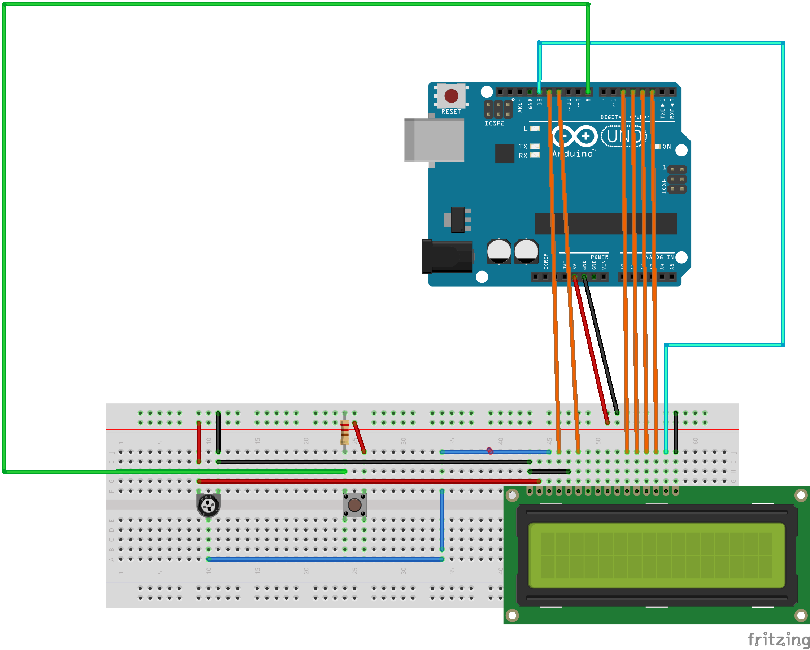

OUTDATED: The lasote/weather block is not curretly working due to problems with AVR compiler for Arduino.
Do you want to know current weather and forecast with Arduino? It’s possible with lasote/weather block and Open Weather Map.


OUTDATED: The lasote/weather block is not curretly working due to problems with AVR compiler for Arduino.
Do you want to know current weather and forecast with Arduino? It’s possible with lasote/weather block and Open Weather Map.
In this post we will show you how to receive a temperature email alert via Arduino.
Using Biicode lasote/carriots_stream block and Carriots service it’s very easy!

Today I bring you a new block (lasote/arduino_http) to make simpler the interaction between Arduino and HTTP.
In this post we will show how it is possible to send email from Arduino!
We registered at the great temboo service which offers connection >100 services (gmail, twiter, github, and many more) and a library for Arduino. But the provided temboo library expects a reference to something implementing the Arduino SDK Client “interface”. In the setup we’re using an Arduino Mega2560 with the Adafruit CC3000 WiFi module.
If you ever need to connect the CC3000 module with another service, you can do it using this Ardunet block with network utilities for Arduino. Unluckily, the Adafruit CC3000 library does not conform with this interface, so I had to roll my own one.

JSON is a human-readable standard format to transmit data objects consisting of attribute-value pairs. It’s very useful for data interchange in network communications like HTTP or even a simple socket connection. There are several libraries to manage JSON with your favorite programming language. You can use php, python, java, javascript… even c or c++. But these libraries become useless with Arduino. Why?
«JSON vector logo» por Douglas Crockford. Disponible bajo la licencia Public domain vía Wikimedia Commons.
For the Arduino Day we posted a state machine library. Today we are going to make a more elaborated example.
in this example we have a button that is used to switch states in the same way than the previous example and a LCD screen. The LCD screen will rotate among various messages when we press the button.
Here is the schematic:

For the Arduino Day I’ve built a state machine library or deterministic automaton. A state machine serves as a manager that organizes a set of states, or behaviors. It manages the transition between states, and the state itself.
There was already a state machine library in arduino playground but there a couple things I didn’t like about it:
We know you work pretty hard and we want to help your code being more reliable.
This is why we asked Julia, our SW engineer for help.
We just released biicode 0.7.2 containing a few bugfixes and a couple of cool tutorials.
Would you like to surprise your friends by doing something really cool?
You can now make a moving doll in just 20 minutes using RaspberryPI and biicode.
Credit: ScratchMyPi
It’s super easy, you only have to follow this 4 steps:
{kind=link}